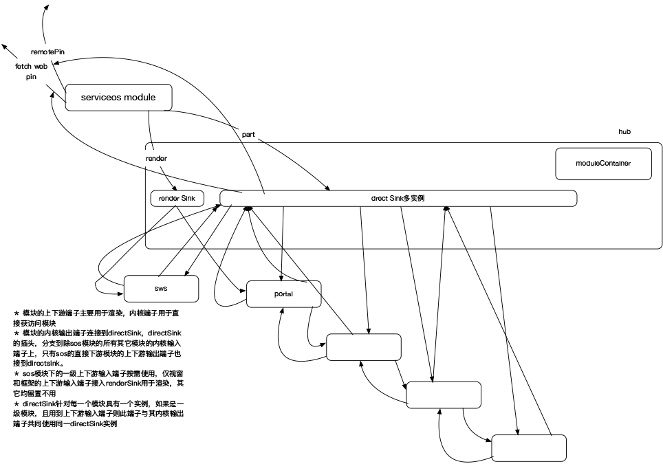
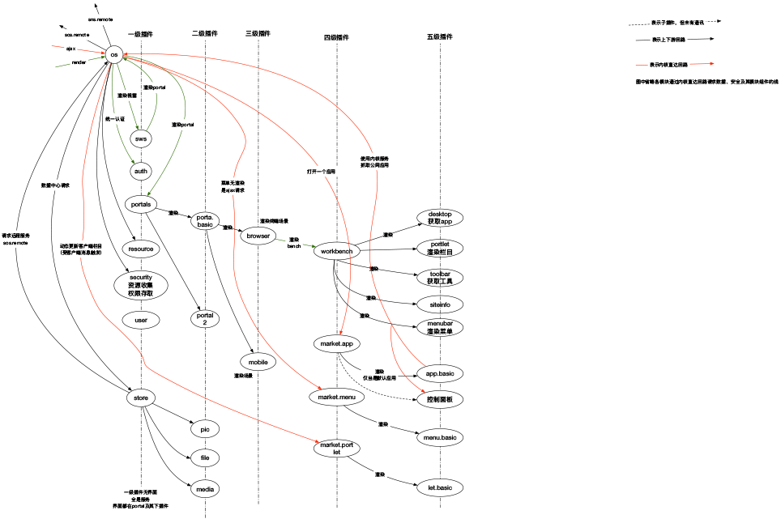
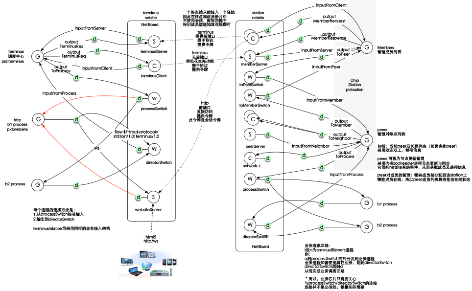
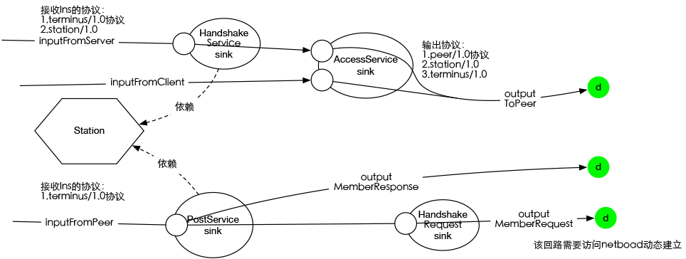

面向连接编程思想
- 作者：cj (赵向彬)发布日期：2016年8月11日 3:24
关键词：面向连接编程 面向模块编程 面向协议编程 编程思想 结构化 面向对象
java j2ee spring dotnet osgi netty tomcat jetty nodejs jsp php aspx zookeeper docker
java j2ee spring dotnet osgi netty tomcat jetty nodejs jsp php aspx zookeeper docker
摘要：“芝麻开门，门于是就开了”，自从逻辑能够控制实体以来，
人类就迈进了信息控制的大时代。为了更好的组织逻辑，全球的精英为之发明了一代又一代的思想，
从断片式的汇编，到穿连成函数的结构化编程，再到穿连函数成对象的对象化编程，一波比一波先进，一浪逐一浪更高，这符合进化论。
没错，世界受观测者影响，被认为是由一个个的被隔离对象组成，他们从世界本相当中找出差异，分出共性和异性，因此，对于观测者来说，只要实体边界清楚了，逻辑也就清晰了。然而，
编程思想止乎此已有数年，我就有些犹虑：“难道编程思想就止于此吗，面向对象编程就是终极理论？”
我的回答是：“非也！”面向对象编程有个致命的缺陷——高耦合。现象界的实事总是纷纷扰扰，互为苟合，当思考一个比较大的系统时， 面临着与断片式编程一样的问题，麻绳混成团终始不易解。而随着软件规模越做越大的今天，正是需要新的编程思想之际，面向连接编程为之提供了一个不错的选项
回顾编程史，断片式编程让开发者关注在实物自身；结构化编程让开发者关注在过程之中，对象化编程，让开发者关注在事象的属性关系之内，因此， 编程思想的发展，实际上就是如何引导开发者分析事象的方法论的发展，关注的方面不断的升级，从实物－过程－概念（对象）。而面向连接编程，关注在对象或系统间的连接结构， 有静态连接结构（对象化）和动态连接结构（运行时）之用，考虑的是信息在一个静态或动态逻辑网格中的如何流动，如何控制，输入什么格式、输出什么格式。因此， 开发者不再关注于静态结构的接口，而是关注在它的信息流径和格式。参考上帝的编世思想，自然界中到处都是网格化的，小如神经网络，大如星系云河，无一不是在一个大网格中产生效用，并且非以彼此触及而发生作用， 实事上，即便是手指按在键盘上，也并没有真实的接触，而是通过“力”作用于彼此，而力就是信息，这就是上帝解藕现象的办法。因此， 颇具有借鉴意义。由此来看，面向连接编程，也是一门力学。
我的回答是：“非也！”面向对象编程有个致命的缺陷——高耦合。现象界的实事总是纷纷扰扰，互为苟合，当思考一个比较大的系统时， 面临着与断片式编程一样的问题，麻绳混成团终始不易解。而随着软件规模越做越大的今天，正是需要新的编程思想之际，面向连接编程为之提供了一个不错的选项
回顾编程史，断片式编程让开发者关注在实物自身；结构化编程让开发者关注在过程之中，对象化编程，让开发者关注在事象的属性关系之内，因此， 编程思想的发展，实际上就是如何引导开发者分析事象的方法论的发展，关注的方面不断的升级，从实物－过程－概念（对象）。而面向连接编程，关注在对象或系统间的连接结构， 有静态连接结构（对象化）和动态连接结构（运行时）之用，考虑的是信息在一个静态或动态逻辑网格中的如何流动，如何控制，输入什么格式、输出什么格式。因此， 开发者不再关注于静态结构的接口，而是关注在它的信息流径和格式。参考上帝的编世思想，自然界中到处都是网格化的，小如神经网络，大如星系云河，无一不是在一个大网格中产生效用，并且非以彼此触及而发生作用， 实事上，即便是手指按在键盘上，也并没有真实的接触，而是通过“力”作用于彼此，而力就是信息，这就是上帝解藕现象的办法。因此， 颇具有借鉴意义。由此来看，面向连接编程，也是一门力学。
正文：
一、概念定义 事象的定义：对于中国山寨得来的计算机科学来讲，通常以直译而来的“对象”表述英文中的Object，以“类”来表述Class，从修辞学上来讲，这是不准确的。比如，“我捡起这本书”这一句话，假如我以三个类来表述，分别是：I，Pick Up，The Book，分别对应三个对象：i,pick,book，当我把pick up当成一类时，放到这个语子中，我会说“拾起”是个对象，对象“我”，用对象“拾起”作用于对象“书”，意思就有些别扭了，“拾起”怎么会是对象？因为，对象在汉语的修辞中一般用于指六感所能感知的实在物，对于动态的、时态中的过程它并无此语境，因此必须正本清源，不再引用这类毫无准确性可言的“翻译性术语”。 对于人类而言，六感所能感知的，命名为“象”，意识到的：动态的、时态的过程，皆命名为“事”，因此，事象代表了一个“存在”的结构本质和运动的生命期。而在一个事象之中，往往即有又有象又有事，当去分析其中的一个象时，发现又有小象和小事，且事、象互转，无止无息，象中有事、事中有象，类此不穷。 接着前面的例子，当我说：我（这个象），拾起（这个事），作用于书（这个象）时，语境就合乎逻辑了。 连接的定义：连接也是一种事象，具体指联系不同事象的事象。事象之间总是通过连接发生作用。连接可分为接触性连接和非接触性连接。接触性连接往往固化在事象的先天结构之中；非接触连接就象“流体”和“力”那样与彼事象发生作用。面向连接编程，就是一门分析事象之间的连接科学。 ecm：电子芯片连接模型。它是面向连接编程思想的得以落地的工具，是非接触连接工具(neuron,netsite)的基础事象连接工具。 二、概述面向连接分析的作用 为了让读者对面向连接编程有个初步的概念，故而先行在此段举个例子说明。 比如：jack转账给tom 100元 在面向对象的分析方法中，抽象类:User代表jack和tom，抽象类：Transfer代表转账T1 按面向对象的分析规范，先做类静态结构分析，再做活动图分析。在静态结构分析时，我们发现Transfer应该依赖User，在活动分析时Transfer的实例T1要持有jack和tom的引用。面向对象分析法只是引导了开发者如何思考静态结构和活动以及它们的依赖关系。 而在面向连接的分析方法中，jack这个事象与tom这个事象之间生成了一个新事象：转账，这是有方向性的，表述为：jack—>T1—>tom，再接下来分析，当事象T1发生转账时，它要向jack扣除款项100元，并使tom入账100元，则进一步表述为： T1—>减除100—>jack 且 T1—>增加100—>tom 这里，T1是事，jack/tom是象，如果将减、增看成是T1的子事，那么Ｔ1对于jack与tom就发生了两个有向连接。在接触连接中，T1通过jack和tom的引用进行操作，在非接触中，T1通过获得jack传入的“流”来做出处理，并将结果向tom“流”出。 因此，面向对象编程的关注点在静态结构分析和活动方法上下功夫，而面向连接的分析方法中关注在事象间的作用与接触方式上。 因此，在面向连接编程分析时，需要习惯性的这样发问：“这些象是什么？象与象之间发生了什么事？如何接触？” 三、事象之内 事象工厂 在生活中我们经常会这样做，在我们需要白菜时，会到冰箱拿，当需要萝卜时，也会到冰箱里拿，当我们需要醋和盐时，会到放调料的厨柜里拿。推而广之，在做一个“事”时，总会到某个地方拿出“事象”，这看起来就像个箱子，对所有的事象共享。事象工厂对于面向连接编程尤其重要，它不仅仅是解耦事象与事象之间接触连接的手段，更为重要的是它为事象提供了“原料和原动力”。 事象在需要其它事象时从事象工厂里取出，在取出时，根据构建的方式不同，有单例事象和多例事象之分，根据生命期的不同，有编译期这种固定结构的事象，也有动态可变性的事象之别。 事象工厂负责管理这些共享事象的生命周期。 在一些情况下，事象工厂设有拦载事象请求链路的逻辑，而且提供在链路连接上依需插入用于拦截的事象的能力。 先天结构 先天结构是指在设计期既确定下来的事象的结构，它与其它事象的连接被编译和固化在结构之中，它是事象的本质表达，这种结构性的连接，我们称之为“静连接”。静连接，具有高内聚形态，因此在一些引用层次之中，导致了较高的复杂度。因此在需要解藕时，自然要借助于事象工厂。 事象时态 将事象工厂引入系统内之后，事象就具有了时态特性。事象的时态分为：构建时态和运行时态两种；构建时态又分为单例构建、多例构建以及按需构建；在运行时态中，应该支持将任意一个在运行的事象放入事象工厂，并由事象工厂将事象用于别处。 构建时态是在系统启动时，将事象的一些属性和方法连接到工厂的某些事象中，此时，工厂得到事象的请求后，将构建事象或将现有事象返回。 还有一种情况，一个事象在构建时主动把自己连接到另一事相的方法或属性中，这种情况叫“反向连接”。 这种在构建或运行时才连接到事象的连接，我们统称为“动连接”。 静连接是面向对象编程的特性，动连接是面向连接编程的特性。 四、事象之间 本节讨论一个拥有事象工厂的事象与另一个拥有事象工厂的事象之间的连接。为了简便期间，我们假定三个事象，一个是主事象M，在主事象M内，将事象A连接到事象B，我们把A称为B的外事项，反之，B就是A的外事象。 接触 1.事象实例的接触 接触就是通过引用或指针连接到事象。一个拥有事象工厂的事象将其内的事象按对外的可见性分为两类，分别是内事象与外事象。故名思义，内事象在外部是访问不到的，它是事象内的逻辑单元；而外事象，用于外部的连接，它告诉外事象它应有的行为，其行为由内部的事象来处理，外部不必关心。这就类似于面向对象编程中一个类的public方法与private方法的区别。 外事象对内事象的连接形式，即可在构建时连接，也可在运行时按需连接。 2.事象结构的接触 除了事象的实例可以被外部事象连接之外，还有一个重要的方面就是，事象内的类型（类或接口）也可被外部的事象以派生（或实现）的方式连接，它提供了一种外部事象作为所依赖事象的扩展手段。这种连接的用途也是非常广泛，首先它就是一种适配模式，其次它支持了插件式扩展方案。 事象默认情况下类型是封闭的，只有被声明为开放的类型才可被外事象连接。以此保证一个事象的边界。 ecm事象接触的例子，在本网的开发平台中找ecm相关文章，此处略。 非接触 事象之间非接触是指不直接通过获取引用或指针而达到与另一事象的连接，一般是通过“流”的形式，并通过公开流的协议而达到连接的目的，双方并不持有对方事象的实例。通常web service就是一种以net作为介质的非接触的事象，同样像web container也是一种以net作为处理http流的事象。非接触事象具有以下几种形式： 1.完全非接触，往往以net作为隔离， 用于服务的事象在得到请求后交由流事象处理，在这种情况下，流事象属于所在事象的内部事象，这种应用最为常见。 2.仅接触对方事象中的用于处理“流”的事象，这种应用也常见，但是事先能够预知获通过事象的外连接口发现其内包含的流事象。 非接触引导开发者导向了面向协议编程，使得系统扩展性更好，更为松散。非接触使得事项模块化，又引导开发者导向了面向模块编程方向的思考。开发者在设计一个事象时，自然而然的要考虑这个事象接受什么、输出什么协议，有什么外部事象，要第三方怎么使用它，等等。 总结：事象之间连接起来就是一个大事象的功能，变化一下连接就可能变易了大事象的形为，因此，连接是非常重要的，特别是对于大型分布式系统，前面的事象可能要与其后的多个事象连接，实际上也有一定的复杂度。像面向对象编程对类的分析一样，面向连接编程对连接的分析也是最灵活、最难的而且至为关键，连接规化的不合理，很可能就导致网络的滥用或性能的瓶颈。 ecm事象使用net工具包实现非接触的例子，在本网的开发平台中找神经元相关文章，此处略。 六、面向连接编程的应用 1.插件体系的连接实现 图中是lns.com的平台网站的内部结构，每个圆角矩形实际上是一个程序集，程序集是是ecm的基本程序单元，中间的大距形是主程序集，它用于连接了各个插件。在图中可以看程序集被插件化，并有层级之别，在portal插件之下又扩展了几个插件。插件与插件之间以非接触的流事象将请求链路连接起来。  下图说是插件连接的结构及流向。  2.分布式体系的连接实现  图中是两个netsite之间的连接，它们通过输入与输出端子彼此以与接触的net方式相连 
上图是一个非接触事象StationGraph的内部连接结构分析图。